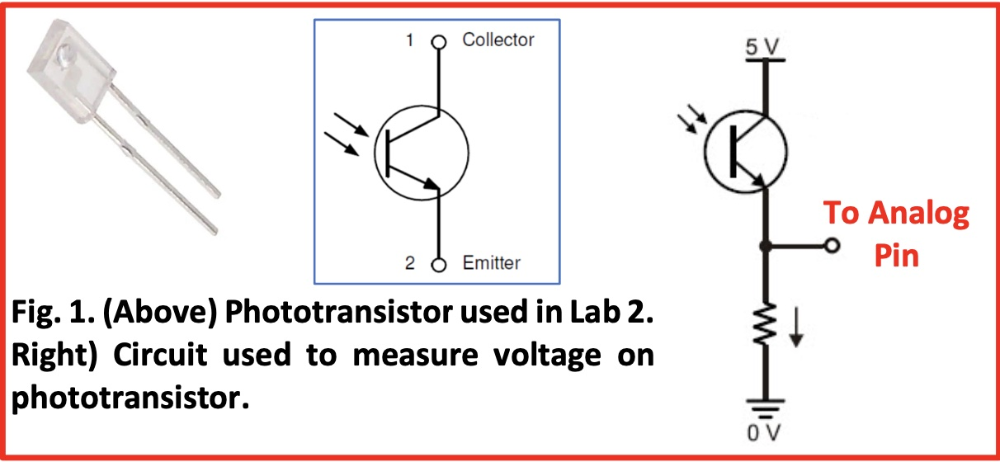
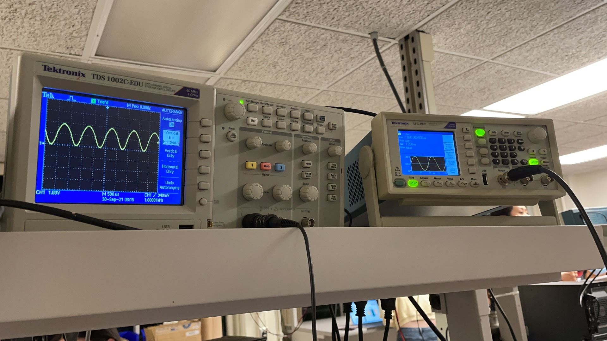
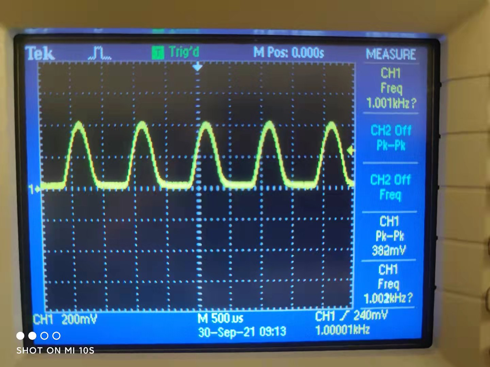
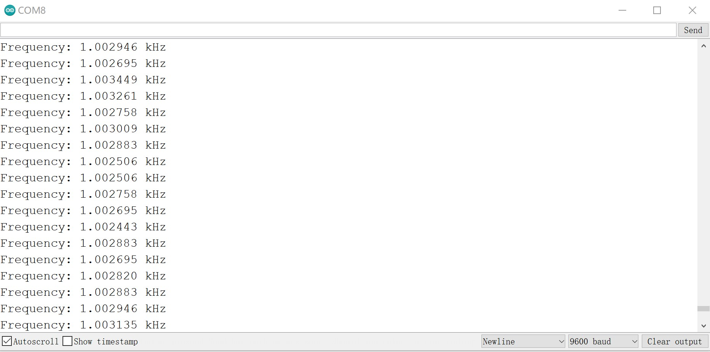
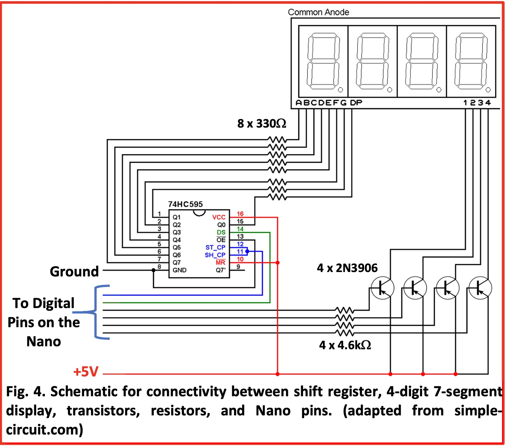

Objectives:
For part 1:
- Build a simple IR light detection circuit with phototransistor.
- Build a simple IR light emitting circuit using the signal generator on a separate breadboard.
- Test the IR detection circuit with the oscilloscope.
- Test and characterize your IR detection circuit with the Nano.
- Build the other two IR light detection circuits on your robot’s breadboard.
For part 2:
- Build the display component of the base station on a separate breadboard.
- Test the display base station circuitry.
Materials:
For part 1:
- Robot
- Long breadboard
- Signal generator
- Oscilloscope
- Caster wheel
- 3 x Phototransistors (side view #LTR‐301, or top view # 1540031NC6090)
- 3 x 2.2kΩ resistor
- IR LED + resistor
- wires
For part 2:
- Arduino Nano Every & micro USB cable
- Long breadboard
- One 4‐digit 7-segment display (TDCG1050M Green, or TDCR1050M Red)
- 4 x PNP transistors (2N3906)
- SN74HC595N shift register
- 8 x 330Ω resistors (for the shift register)
- 4 x 4.6kΩ resistors (for use with the transistors)
- wires
Procedure:
Part 1: LIGHT DETECTION AND FREQUENCY MEASUREMENT
1. Build IR Detection Circuit on the Robot
In order for our robot to navigate through a maze and find a number of treasures which consist of infrared (IR) LEDs positioned randomly in the maze, we need enable it to detect IR light in three directions as it moves forward.
To build an IR detection circuit on our robot, we followed the graph below, where the 2.2kΩ resistor acts to pull down the voltage.
2. Build IR Emitting Circuit
To measure a blinking IR signal, we then built a blinking LED circuit that will act as a treasure by connecting the LED in series with a resistor. For resistance, we choosed 60Ω so that with a voltage of 1.2V the current flowing through the LED will be 20 mA .
We then used the signal generator as power source for our LED, which generate a sinusoidal waveform with 1kHz frequency and 1.2V peak-to-peak voltage.
3. Test the Generated Signal
To confirm that the signal generator is indeed generating a sinusoidal waveform with a frequency of 1kHz and a peak‐to‐peak voltage of 1.2V, we used the oscilloscope by connecting its red wire to where we connected the red wire from the signal generator, and connecting the black wire from the oscilloscope to the black wire from the signal generator.
The figure below shows the trace for the 1kHz signal.
Note that we set the signal generator to output a 1.2V peak‐to‐peak signal, but the oscilloscope is reading a max voltage more than 2V. The reason is that there is an impedance mismatch between the signal generator’s and the oscilloscope’s. But it doesn’t matter so much for us, because we are interested in the frequency.
4. Test the Phototransistor Circuit
Now we can play around with our detection circuit and IR emitting circuit. By moving the LED in our IR emitting circuit around the phototransistor, we enabled the phototransistor to detect the signal while we were using the oscilloscope to display the signal it detected (see figure below).
5. Measure Signal's frequency with Nano
For this part, we used the peripheral Analog Comparator (AC) along with TCB that are integrated within the ATMega4809 microcontroller to measure the frequency of the IR signal.
We first disconnected the oscilloscope’s probes from our circuit and then connected the output of our detection circuit to an analog pin of Nano.

The measured frequencies are displayed by the Serial Monitor:
Part 2: 4‐DIGIT 7‐SEGMENT DISPLAY
For the second part of the lab, we deals with building the display component of the base station on a separate breadboard, which consist of a Nano, 4‐digit 7‐segment display, transistors, resistors, as well as a shift register to reduce the number of pins that will be used on the Nano.
The Schematic for connectivity is shown below:
After finishing building the circuit, we uploaded the code to the Aruino to see whether the 7-segment display correctly display the numbers we set in the loop() function of our code.
The figure below shows our 7-segment board displaying the number 2468: